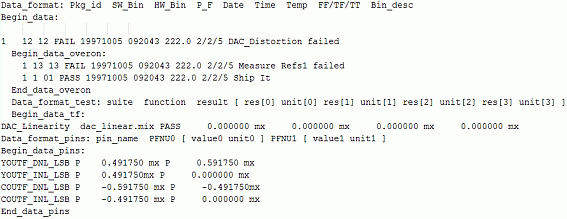
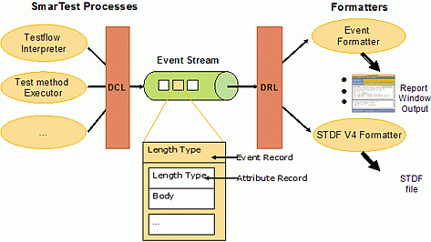
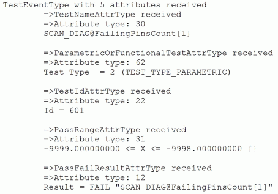
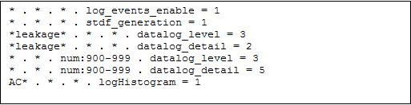

The V93000 Data Logging Architecture
Ryan Lucy, Verigy
Gerd Bleher, Verigy
Yu Hu, Verigy
Paper ID: 105479
Abstract
The V93000 data logging architecture provides an extensible and efficient means to log various levels of data encountered during test program execution. Although this architecture was designed with the customer in mind to offer the highest degree of data log flexibility, the advantages are often overlooked in practice.
This paper aims to explore the V93000 data logging architecture from a practical standpoint to give end-users a better idea of what configuration strategies are available for their specific needs. In particular, concepts such as events, event streams, data collection files, STDF, formatters, and data log flags are put into context. In addition, performance aspects and the available application programming interfaces (APIs) to write and retrieve desired log data are described. Finally, the new concept of data logging profiles (introduced with SmarTest 6.2), which provides an even simpler means to control data log behavior, is explored.
Historical Background
When SmarTest was released on the HP83000 in the early 90s, the data log was written in a tabular ASCII format called the Generic Data Format (GDF). As the devices grew in terms of complexity, more and more data was logged. That's when GDF became problematic; the primary target audience of GDF, the human reader, couldn't deal with the sheer size anymore. Processing GDF with software tools, on the other hand, was extremely difficult for two reasons:
- The tabular format was hard to parse (see Figure 1).
- Each extension to the format resulted in adjustments to parsers maintained by customers or
the field team

The goal of the new data logging infrastructure of SmarTest was to remedy the shortcomings of GDF. The new way of data logging required the following characteristics:
- It should be possible to add new data entities without breaking the back-end infrastructure
- The data log information should be available immediately after it had been written to allow real-time processing, unlike GDF where the file was completed at lot end
- It should be possible to access the data log through an API to spare the user from having to write tedious parsers
- It should be possible to process data coming from the tester in real-time, as well as offline using the same tooling
- It should be easy to translate the format into any other format, for example, STDF or an ASCII format
- It should be possible to use the same tooling for interactive debug as well as for analyzing production data log files
- The overhead for data logging should be small and the file should be compact
The result was the concept that is now called event data logging.
Event data logging architecture
The main concept of event data logging is the event stream, which contains records coded in Event Data Log (EDL) format, illustrated in Figure 2. When certain events are encountered during test program execution, for example, when a test result is available, an event record is written to the event stream. The event stream forwards the event record to all clients that have subscribed to this particular type of event. Event records themselves are containers for attribute records. The attribute records, such as value result attributes or time stamp attributes, are the actual information containers.

Event records and attribute records consist of a header with type and length information and a body carrying the binary-encoded data. This format allows the introduction of new event and attribute types without interfering with the implementation of a client; the client will just skip unknown event and attribute records.
Event records are forwarded to all clients immediately after they have been written to the event stream. Thus, it is possible to use the data also for real-time monitoring. At the same time, the events are written to a DataCollection file, which can be saved for external processing.
The API used to write events into the event stream is the Data Collection Library (DCL). Its main responsibility is to synchronize the access of parallel processes to the event stream. The DCL is primarily reserved for use by internal SmarTest processes; it should only be applied directly when no other logging means (for example, test method API) is available.
The library that is used to read from the event stream, the Data Retrieval Library (DRL), can also read the event records from DataCollection files. Using this library eliminates the need for end users to write their own parsers. The DRL provides a public C API to attach to event streams, read DataCollection files, decode binary attribute records into C structs or deal with memory management.
A number of formatters - tools that translate the data log information into other formats - are delivered with SmarTest. They all utilize the DRL to obtain the event data.
- The Dataformatter generates STDF V4 compliant data log files
- The Event Formatter is a plug-in to the report window that displays event content in ASCII format
- The Data Analysis Tool displays the test results in a graphical user interface and allows interactive statistical analysis on the data
- DRLDump is a simple command line formatter for debugging purposes that writes an ASCII representation of the event and attribute records to a terminal
In addition to the packaged formatters, end users are free to write their own custom formatters for generating essentially any desired format by plugging into the DRL directly. The API provides a mechanism to obtain the next available event in the event stream, which the programmer calls in a loop fashion, converting the data of each of the event attributes of interest into the new format. There are several customer formatters already in the field that rely on this mechanism, making it a core part of SmarTest that will continue to be supported and enhanced in the future.
Since the physical file name of the event stream's implementation has traditionally been DataCollection, the terms "DataCollection file" and "EDL file" have become synonymous, in practice. The terms are used interchangeably throughout the rest of the document.

Performance Considerations
Even though event data logging itself has been designed for good performance, the data logging speed of the V93000 has occasionally been criticized. The following factors can potentially affect data log performance:
- Different measurement algorithms and different tester resources
When the level of data logging detail is increased, SmarTest might use different measurement algorithms and tester resources that impact the test time. The Pin PMU, for example, can compare a voltage or a current quickly against an upper and lower limit. If values are measured, the output of the Pin PMU is connected to the Board ADC, which is shared among the channels on a board, and which averages over a number of measurements. If the System PMU is used for the measurement, it takes even longer.
- Expensive data generation
Some data items are expensive to generate. For example, to generate more than 8k failing cycle information on a V93000 single-density system, the test has to be executed multiple times. Also, rather expensive is the conversion of cycle numbers to vector numbers: the sequencer programs are emulated in software to find out which vector resulted in which cycle.
- Expensive data upload
Loading large amounts of data from the tester into the workstation is a time consuming operation. It's even more time consuming if the data needs to be recombined in the workstation, for example, when the bits of a digital waveform are captured by different digital channels and then need to be combined to a, say, 16 bit word to get a sample point.
- Event data logging infrastructure (DCL, DRL, event stream)
Finally, when the data is measured, uploaded, transformed and evaluated, it is formatted into event and attribute records and written to the event stream. As will be shown later, the amount of time needed for logging the data is negligible.
- Formatting
Since formatting of data log events is decoupled from the test execution through the event stream and typically runs on another core or second CPU, there is almost no measurable impact on the overall performance on modern multiprocessor workstations.
Table 1 illustrates the above statements on a sample device. The measurements were taken during the execution of a production test program for a microcontroller device on a V93000 Pin Scale system. The testflow was executed 50 times on a defective device.
Description |
Execution time (seconds) |
Additional Overhead (%) |
|
|---|---|---|---|
Production |
Data log completely off 1 |
137 |
-- |
Event data log on, all testsuite flags off 2 |
137 |
0% |
|
+ output on pass / output on fail 3 |
139 |
1.46% |
|
+ per pin on pass / per pin on fail 4 |
147 |
7.30% |
|
+ value on pass / value on fail 5 |
153 |
11.68% |
|
Engineering (Debug) |
+ 100 failing cycles (FFC) 6 |
569 |
415.33% |
+ 100 failing cycles + edge results (FRG) 7 |
883 |
544.53% |
|
+ 100 failing vectors (drive + expected + received) (FFV) 8 |
3943 |
2778.1% |
|
1 This is the base test execution time with no data log influence, measured by setting log_events_enable to false and disabling all GDF flags.
2 This is the overhead seen by setting log_events_enable to true with no other data log flags enabled. Almost no events are written in this case.
3 This is the overhead incurred by writing the pass/fail results to the event stream.
4 5 This overhead is attributed to different measurement algorithms that are applied to produce more detailed results.
5 7 First Failing Cycles and Fine Result Granularity are used primarily in engineering mode due to the high cost; the SCAN Diagnostics project will offer a much faster solution suitable for production.
6 First Failing Vectors require a reconstruction of the vector sequence emulated in software, which is a very expensive process used only in engineering mode.
Data logging configuration
Since the degree of data logging can have such a dramatic impact on execution times, the means of controlling data log behavior is now explored.
The most straight-forward configuration approach is to simply set the predefined SmarTest flags that affect data logging, which are distributed over system, testflow, and testsuite flags. System and testflow flags control the overall behavior, for example, whether data log events are written at all (log_events_enable), or, starting with SmarTest 6.2, whether STDF is generated for the current test program execution (stdf_generation). Testsuite flags, on the other hand, control the data log behavior of individual testsuites, for example, whether results are logged for each pin or whether values are logged along with pass/fail results. Testsuite flags are implicitly evaluated in the functions of the test method API when logging decisions are made.
Another way to control what is written to the data log is to program the test method directly to meet the data logging needs. There are a number of test method API functions, namely TEST(), judgeAndLog...(), PUT_DATALOG(), or the methods of the TESTSET class that format their parameters as data log events and put them into the event stream. It is possible to make the test method code dependent on flags, for example, call PUT_DATALOG() only if the log_mx_waveform flag is set.
When writing data log events, the test method API functions use the DCL to format the data and queue the events into the event stream. It is also possible to call the DCL directly from the test method code if a suitable test method API does not exist, which gives the user the ultimate control over the contents of the data log stream. However, this is not a recommended practice since the formatters that read from the event stream expect events in a certain order and with certain content. A malformed event stream could potentially cause the formatters to crash and thus cause loss of data.
Last but not least, most of the formatters can also be configured as to how they format the data log events. The STDF data formatter gets its configuration from configuration files; the Event Formatter has a dedicated user interface raised by clicking the report dialog button in the report window's menu bar. The formatters themselves only negligibly affect data log performance since they are not involved in the critical test execution path and simply post-process data that was already written to the event stream.
As can be seen, there are many ways to configure data log behavior. It is the responsibility of the test program developer to determine the appropriate level of data log detail for each test that is executed. Although logging more information is a valuable input to yield learning tools, there is always the performance trade-off to consider, as the message in Table 1 clearly communicates. Finding a reasonable balance is one of the engineering challenges of getting a test program fit for production.
STDF considerations
Event data logging has been the native logging format of the V93000 platform for many years. Despite its advantages, it was never adopted widely as an input format for back-end tools. The ATE industry converged to STDF for production data logging, which is acknowledged as the de-facto standard. Because of this, the need to log STDF in addition to EDL became apparent.
Since all relevant test information is available in the DataCollection file, it is just a matter of writing a formatter to convert the information into STDF. This is done by tools such as the legacy hp83_to_stdf formatter and the new STDF v4 compliant data formatter, which are both executables delivered with SmarTest. Both tools expect an EDL stream or file as input and generate the corresponding STDF file. It should be noted that more information is contained in the EDL file than can be mapped to STDF, making the EDL file the ultimate source for extracting additional 93000 specific data log information.
Known drawbacks
Event data logging implements a fast and extensible method to distribute data log information from several sources to several clients with very little overhead. Unfortunately, there are a number of drawbacks in the current implementation:
- The event stream is implemented as a file. This can have two potentially dangerous consequences. First, if not truncated, the file can grow boundlessly and exhaust the file system, making it impossible to log further test results. Second, when SmarTest shuts down, the DataCollection file is deleted since it is located in the SmarTest session's working directory under /var/opt/hp93000/soc/tmp. If the user has the strategy to copy and truncate this file on a lot or wafer basis and post-process it, the test results are lost. Although a simple work-around of creating a hard link to the DataCollection file to prevent deletion exists today (using the Unix command ln), this approach is not well known and the potential loss of the file in the temp directory remains a major drawback.
- Many end-users are only interested in viewing data collected during specific device executions, wafers, or lots. However, since the DataCollection file is a single entity that grows continuously, it is not easy to extract such specific production data once the file has reached a considerable size.
- The configuration of what data gets logged, which is typically specified via the system, testflow, and test suite flags, is not easy to change once the testflow reaches a considerable size. For example, it is not possible to activate per pin value results for all AC tests by simply flipping a single flag. Instead, each of the AC test suites must be located and traversed by hand using one of the UIs, modifying the corresponding "per pin" and "value" flags along the way, which can be cumbersome for non-trivial testflows.
- A shortcoming of test suite flags is the fact that they are predefined by SmarTest. For some tests, some of the flags Do not make sense, for example, requesting first failing cycles to be logged for opens/shorts tests is pointless. In addition, the test method programmer is currently limited to the current defined SmarTest flags and has no easy way to control data logging based on other specific needs.
Outlook
To overcome the drawbacks mentioned above, several R&D developments are already underway.
To resolve the issues related to the file implementation, the file will be replaced starting with SmarTest 6.2 in favor of a central process (the event stream srver) that is responsible for the event record distribution and optionally logging EDL files for offline processing. Communication will go over Unix sockets, where the server distributes the events of interest on-the-fly to each of the DRL subscribers, which are typically formatters. This approach has several advantages over files:
- Processes that are waiting for data are idle and Do not consume processor cycles. With the previous file implementation, the processes had to poll periodically to check whether new events had arrived.
- Sending event records over Unix sockets is much faster than writing to a file, speeding up the test program execution.
- The event stream server can be configured to write the DataCollection files to a safe location outside of the SmarTest temp directory, preventing the issue with lost files.
- The event stream server can apply different policies when writing the events to a file, making it possible to specify how the DataCollection files should be generated. For example, one policy would be to stop writing to a particular DataCollection file every time that a TestProgramEndEvent is received, allowing a one-to-one mapping between a DataCollection file and one test execution. In addition, another policy would be to keep only the last n log files of interest, discarding any older ones to prevent the hard-disk from becoming full.
To overcome the configuration issues related to flag handling, the concept of data logging profiles will also be introduced in SmarTest 6.2. A data logging profile allows the user to control both existing SmarTest flags and to create custom logging flags, which are referred to as data log properties. The value of a data log property in a data logging profile is described with rules, like:
- "For all leakage tests, log per pin value results"
*leakage* . * . * . datalog_detail = 2
- "Log as much information as possible if the test number is between 900 and 999"
* . * . num:900-999 . datalog_detail = 5
- "Log my own custom histogram for all AC tests"
AC* . * . * . logHistogram = 1
Rules such as these are defined in profile syntax and grouped together in a profile (Figure 4), which can be activated at anytime to instantly change the tester's data log configuration. Profile activation is performed either via a new drop down combo box in the Operation Control UI, or programmatically via a new test method API.

The ability to change the active profile on-the-fly has several advantages. If an unusual yield drop is noticed during production, a debug profile can be selected from the Operation Control Window to enable the more detailed logging configuration, which will log the results that are needed to better understand the reason for the drop. There is no longer a need to toggle all relevant flags per hand or to modify the testflow file, as all flags are automatically set through the activation of the profile with one mouse click.
Alternatively, the testflow's test methods can be programmed to monitor yield drops, automatically. This is just one example of adaptive sampling. If the number of failing tests exceeds a certain threshold, a simple function call from within a test method can activate the debug profile mentioned above, which instantly changes the flag configuration within the tester on-the-fly. In this case, the activation of the debug profile is done programmatically and no user intervention is required.
Summary
Event Data Log (EDL) was the logical answer to creating a more flexible format over the original GDF ASCII approach, which had several practical drawbacks. The core communication concept of an event data log is the event stream, which allows multiple independent readers and writers to attach and exchange data. Readers utilize the Data Retrieval Library (DRL); writers access the Data Collection Libarary (DCL). By tapping into the DRL, end-users can write their own custom formatters to convert the test result content in the any desired format.
Performance is a key concern to anyone writing a test program, and deciding what to log is always an important decision. Several concrete data log performance factors were examined as well as a look at how to avoid such performance hits by logging only the desired data via proper configuration of both the flags and implementation in the test method. In addition, a look at how STDF is generated from EDL was made.
Finally, an examination of the known drawbacks was made, as well as a look at the R&D developments that are currently underway to overcome these limitations. Two of the key developments are the concept of the event stream server (ESS), which allows a more flexible mechanism for generating DataCollection files, and data logging profiles, which enable a simple means to switch the entire tester's data log configuration via a single mouse click.
About the Authors
Ryan Lucy
- Degree in Computer Science and Engineering; University of Texas at Arlington.
- Sterling Software, NASA Center Tracon Automation System Adaptation SW Development; Ft. Worth, Texas (1999-2000)
- Lucent Technologies, UMTS Base Station SW Development; Nuremberg, Germany (2000-2006).
- Verigy, 93000 Production SW Development; Boeblingen, Germany (2006-present).
Gerd Bleher
- Degree in Computer Science and Mathematics; University of Stuttgart.
- Joined the Böblingen Instrument Division of HP in 1994.
- Since then working on various parts of the SmarTest software.
Yu Hu
- Holds a master degree of electrical engineering and information technology.
- Joined Agilent Technologies/ Verigy Germany as an application engineer since the beginning of 2006.